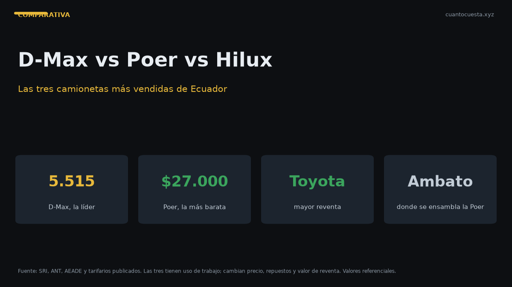

D-Max vs GWM Poer vs Hilux: qué camioneta conviene en Ecuador
Las tres camionetas 4x4 más vendidas de Ecuador frente a frente: precio, ensamblaje local, mantenimiento, repuestos y valor de reventa. Veredicto por uso.

Por precio y volumen: Chevrolet D-Max. Por relación precio/producto: GWM Poer. Por valor de reventa: Toyota Hilux. Las tres son 4x4 y las tres se venden bien, pero le sirven a compradores distintos.
En 2025, la D-Max vendió 5.515 unidades, la Poer 4.092 y la Hilux 1.483. Ese orden importa: el volumen determina repuestos, talleres y cuánto tardas en venderla.
La GWM Poer se ensambla en Ambato por Ciauto. La Chevrolet D-Max y la Toyota Hilux llegan importadas. El ensamblaje local de la Poer significa repuestos y tiempos de entrega más cortos.
Precio frente a frente
| Modelo | Rango de precio | Unidades 2025 | Posición de ventas |
|---|---|---|---|
| GWM Poer | $27.000 – $38.000 | 4.092 | Segunda camioneta más vendida |
| Chevrolet D-Max | $34.000 – $46.000 | 5.515 | Camioneta más vendida de Ecuador |
| Toyota Hilux | $38.000 – $55.000 | 1.483 | Tercera del comparativo |
La diferencia entre la entrada de la Poer ($27.000) y la entrada de la Hilux ($38.000) es de $11.000. Es la brecha más grande del comparativo y define buena parte de la decisión.
Con la D-Max en medio a $34.000, la estructura es clara: la Poer entra cómoda, la D-Max es el punto medio, la Hilux es la opción premium.
Costo real de operación
Estimaciones mensuales de operación — combustible, seguro, matrícula y mantenimiento, con 12.000 km al año:
| Modelo | Costo mensual estimado | Costo a 5 años (aprox.) |
|---|---|---|
| GWM Poer | $245 – $360 | ~$14.700 – $21.600 |
| Chevrolet D-Max | $280 – $410 | ~$16.800 – $24.600 |
| Toyota Hilux | $295 – $430 | ~$17.700 – $25.800 |
La Poer opera entre $35 y $70 menos al mes que la Hilux. A 5 años son $2.100 a $4.200 de diferencia acumulada, sin contar el precio de compra.
Ese ahorro no sale gratis: sale de pagar menos por el vehículo. Es el intercambio del comparativo.
Mantenimiento y repuestos
Aquí está el argumento menos visible y más costoso a largo plazo.
| Criterio | GWM Poer | Chevrolet D-Max | Toyota Hilux |
|---|---|---|---|
| Ensamblaje | Ambato (Ciauto) | Importada | Importada |
| Disponibilidad de repuestos | Local por ensamblaje | Red Chevrolet en todo el país | No especificado en nuestras fuentes |
| Intervalos de mantenimiento | No especificado | No especificado | Más largos que el promedio |
| Red de servicio en ciudades intermedias | No especificado | Sí, incluida | No especificado |
Lo verificado:
- La Poer gana en el origen local — se ensambla en Ambato, y eso acorta esperas de partes.
- La D-Max gana en red: Chevrolet tiene cobertura en todo el país, incluidas ciudades intermedias. Para quien vive fuera de Quito y Guayaquil, ese es un factor de peso.
- La Hilux gana en intervalos de mantenimiento: sus plazos entre servicios son más largos que el promedio, lo que se traduce en menos visitas al taller al año.
Referencia de costo de mantenimiento por marca: los rangos verificados para marcas generalistas van de $300 a $500 anuales (Nissan) y $300 a $600 (Toyota). Para camionetas de este tamaño y uso, presupuesta el extremo alto del rango más desgaste de suspensión y frenos por peso y carga.
Valor de reventa
| Modelo | Argumento de reventa |
|---|---|
| Toyota Hilux | Alta retención de valor en el mercado de usados — el más fuerte del comparativo |
| Chevrolet D-Max | 5.515 unidades al año: el mayor volumen de las tres, mercado de usados profundo |
| GWM Poer | 4.092 unidades y ensamblaje local: buena liquidez, pero menor historial de precio sostenido |
El Hilux tiene el mejor argumento de reventa del trío, y es la razón por la que su precio base alto puede compensarse al momento de vender.
La D-Max compensa su menor retención relativa con volumen: hay más compradores buscando una usada de la que fue la camioneta más vendida del país.
Uso recomendado: para qué sirve cada una
GWM Poer — trabajo intensivo con presupuesto controlado
Si la camioneta es herramienta de trabajo y el precio de entrada manda, la Poer es la única de las tres que arranca en $27.000. Ensamblada en Ambato, con 4.092 unidades vendidas en 2025, es una compra que ya pasó la prueba del mercado.
Mejor para: contratistas, agro, transporte de carga, uso mixto ciudad-campo con presupuesto ajustado.
Chevrolet D-Max — la más vendida, la más segura de revender
5.515 unidades en 2025: es la camioneta más vendida de Ecuador por un margen amplio. Ese volumen significa que hay más unidades en circulación, más repuestos en stock y más talleres que ya la conocen. La red de servicio Chevrolet llega a ciudades intermedias.
Mejor para: quien quiere la opción más difundida, necesita servicio cerca de casa y no quiere sorpresas de disponibilidad.
Toyota Hilux — reventa y menos visitas al taller
Precio de entrada $38.000 y hasta $55.000, el más caro del comparativo. A cambio: intervalos de mantenimiento más largos que el promedio y la mayor retención de valor en usados del trío. Si vas a usar la camioneta tres o cinco años y venderla, esa retención cambia el cálculo.
Mejor para: uso prolongado en carretera, quien planifica revender y valora pasar menos tiempo en taller.
Tabla de decisión rápida
| Si tu prioridad es… | Elige |
|---|---|
| Menor precio de entrada | GWM Poer ($27.000) |
| Repuestos locales y ensamblaje nacional | GWM Poer (Ambato) |
| Mayor volumen y red de servicio nacional | Chevrolet D-Max |
| Red en ciudades intermedias | Chevrolet D-Max |
| Menor costo mensual de operación | GWM Poer |
| Valor de reventa | Toyota Hilux |
| Menos visitas al taller | Toyota Hilux |
| Mayor historial de durabilidad percibida | Toyota Hilux |
Veredicto
Compra la GWM Poer si el precio de entrada manda. A $27.000 es $7.000 más barata que la D-Max base y $11.000 más barata que la Hilux base. Se ensambla en Ambato, tiene repuestos locales y opera entre $35 y $70 menos al mes que la Hilux. Es la compra más racional cuando la camioneta es una herramienta que tiene que pagarse sola.
Compra la Chevrolet D-Max si quieres la apuesta más segura del mercado. Es la camioneta más vendida de Ecuador con 5.515 unidades en 2025, tiene red de servicio en todo el país, incluidas ciudades intermedias, y su mercado de usados es el más profundo de los tres. Para quien vive fuera de las dos ciudades principales, la red gana.
Compra la Toyota Hilux solo si vas a revenderla. Su alta retención de valor en usados y sus intervalos de mantenimiento más largos que el promedio justifican el precio premium si tu horizonte es de 3 a 5 años y piensas venderla. Si la vas a tener 10 años hasta el final de su vida útil, pagaste $11.000 extra por un beneficio que no vas a cobrar.
El dato que zanja la duda: la Poer y la D-Max suman 9.607 unidades en 2025 contra 1.483 de la Hilux. Es decir, 6,5 de cada 10 camionetas nuevas del país son una de esas dos. Comprar dentro de ese grupo no es arriesgado; es la corriente principal del mercado ecuatoriano.
Precios referenciales de lista a septiembre de 2026. Los costos mensuales son estimaciones de operación con 12.000 km anuales y varían por uso, carga y ciudad. Verifica la ficha de la versión exacta en concesionario. No constituye asesoría financiera.
Sigue leyendo
Kia Soluto vs Chevrolet Groove: cuál conviene en Ecuador (2026)
El sedán más vendido de Ecuador contra el SUV más vendido: precio, consumo, espacio, seguridad
Kia Sonet vs Hyundai Creta: comparativa completa en Ecuador
Sonet y Creta no compiten en el mismo segmento. Comparamos espacio, consumo, garantía y precio
Mejor carro para comprar en Ecuador 2026: guía por presupuesto
Cuatro rangos de presupuesto y un ganador claro en cada uno: desde $14.000 hasta $35.000+, con
Cómo usamos estos datos
Las cifras de esta guía provienen de fuentes públicas oficiales y tarifarios de concesionarios publicados. Los valores son referenciales: tasas municipales, promociones y precios de repuestos varían. Verifica siempre en la entidad o concesionario antes de decidir.